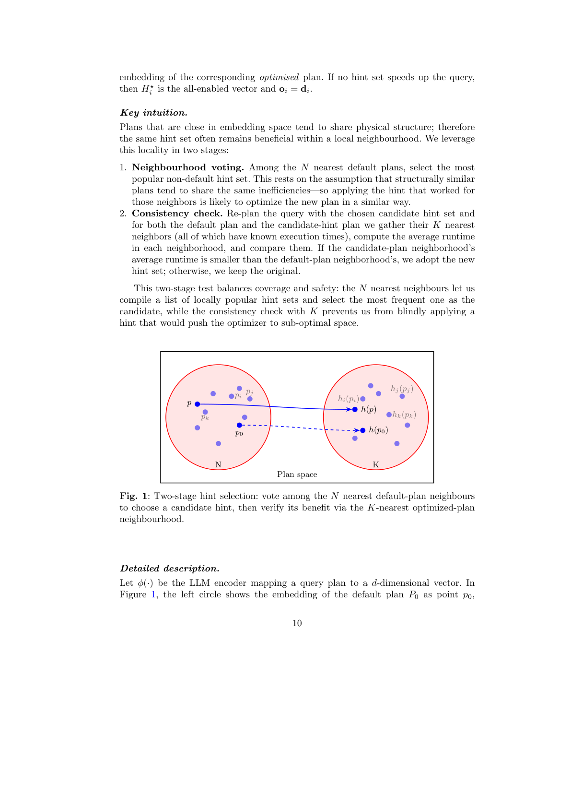
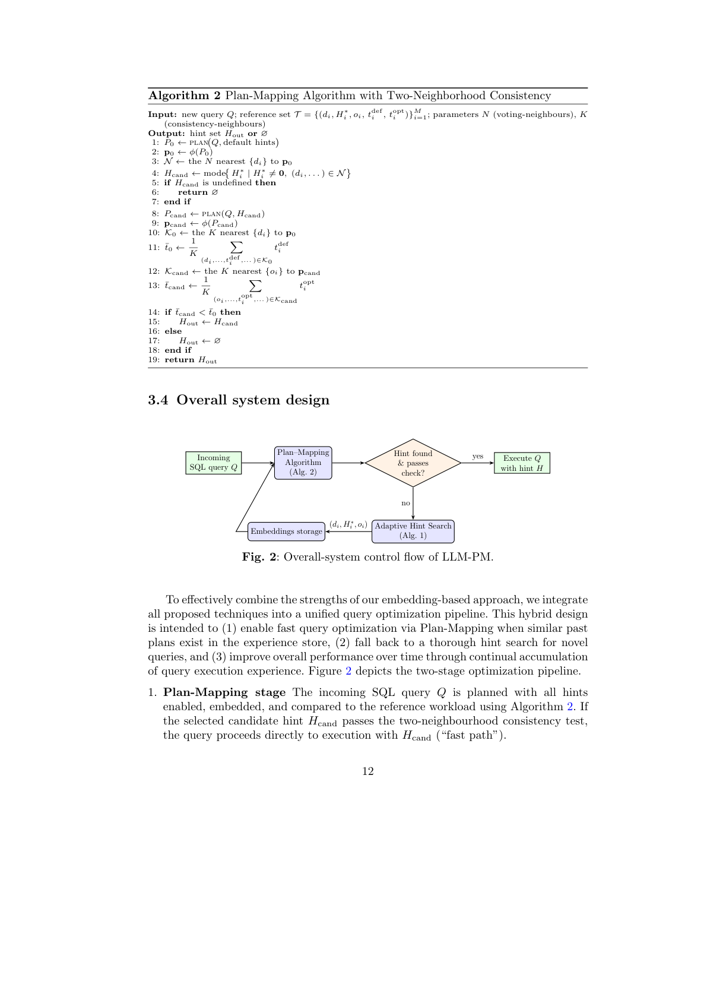
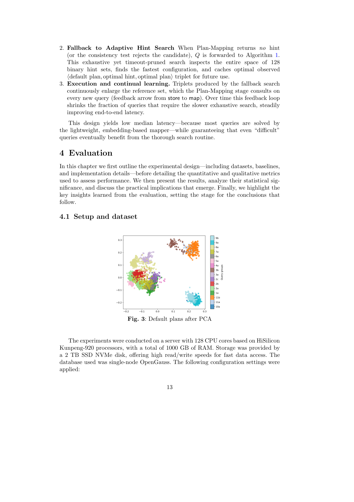
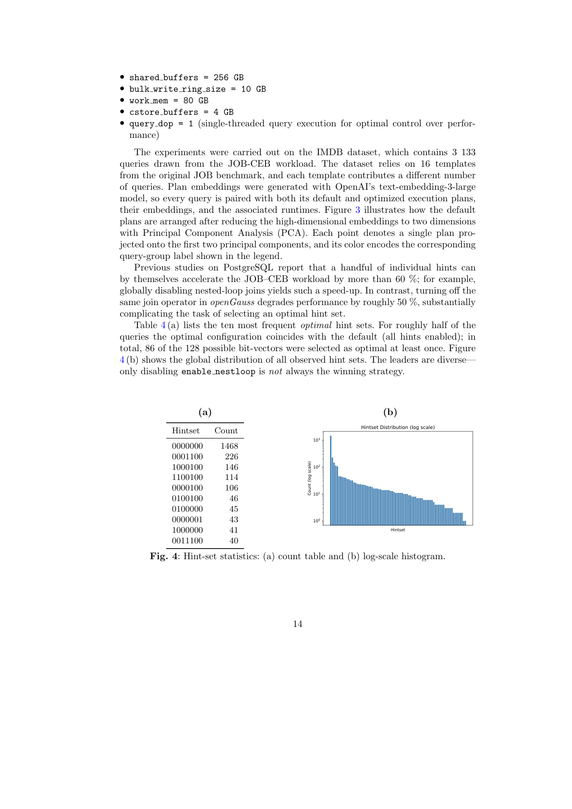
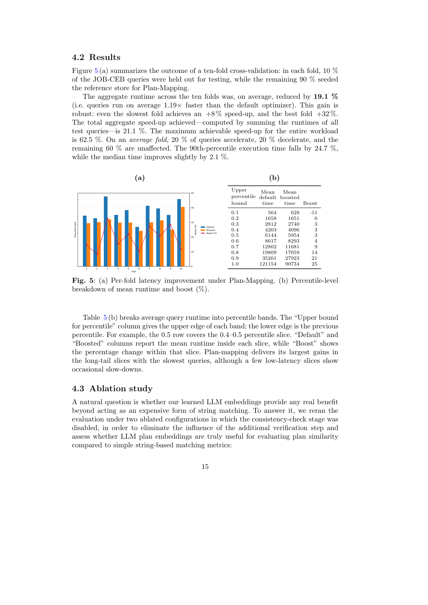
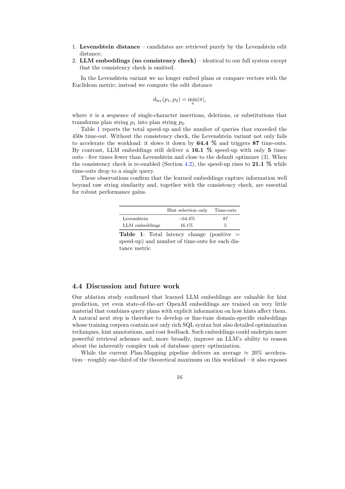

用预训练 LLM 的执行计划嵌入向量，以近邻投票 + 双邻域一致性检验推荐数据库 Hint，无需任何模型训练
大语言模型（LLM）的嵌入向量为数据库查询优化提供了一条极具前景的新路径。本文探索了预训练的执行计划嵌入如何在不需额外模型训练的前提下引导 SQL 查询的执行。我们提出 LLM-PM（LLM-based Plan Mapping，基于 LLM 的计划映射）框架：它对查询的默认执行计划进行嵌入，在已执行过的计划中查找其 k 近邻，并基于邻域投票推荐数据库 hint 集。一个轻量的一致性检验会验证所选 hint 是否有效，而当需要时，一个回退机制会在完整 hint 空间中搜索。在基于 OpenGauss 的 JOB-CEB 基准上，LLM-PM 取得了平均 21% 的查询延迟缩减（即加速 1.21×）。本工作凸显了 LLM 嵌入在查询性能上带来实际提升的潜力，并为免训练、基于嵌入的优化器引导系统开辟了新方向。
关键词：查询优化，面向数据库的 LLM，数据库 Hint
查询优化是关系型数据库系统的核心问题：优化器必须从庞大的备选空间（可能的连接顺序、连接算法、表访问方法等）中为每条 SQL 查询构造出高效的执行计划。数十年的研究催生了精巧的基于代价的优化器，但它们仍不完美，仍可能选出次优计划，从而令查询执行急剧变慢。其根本原因在于基数估计（cardinality estimation）与代价模型（cost model）往往不准——后者常依赖过度简化的假设，因而可能错得离谱。这些错误导致糟糕的计划选择（例如本应用哈希连接却错误地选了嵌套循环连接）。
现代数据库系统提供优化器 hint 作为影响或覆盖计划选择的机制。hint 是嵌入 SQL 中的指令，引导优化器考虑特定策略，例如使用某种连接顺序、偏好哈希连接而非其他连接类型、或对某张表使用索引。原则上，熟练的 DBA 可以用 hint 把优化器从已知的坏决策引向更好的计划。例如，某个 hint 可以强制使用此前被忽略的索引，或约束连接顺序以避开低效连接。然而，挑战在于选择正确的 hint 极其复杂——它需要对查询、数据以及优化器内部启发式有深刻理解。一个错误的 hint 甚至可能适得其反，使性能退化而非提升。
这些困难激发了用机器学习自动化查询优化的兴趣。近期趋势是把优化器当作黑盒，用学习方法通过建议 hint 或计划微调来辅助它，从而导向更快的执行。这种方式避免了彻底替换优化器，而是聚焦于引导它做出更好的决策。近期研究显示，大语言模型（LLM）能显著增强数据库查询优化——它们被用于生成执行计划、嵌入查询以理解其语义、以及提供优化 hint。这些方法的 promising 结果表明，LLM 正成为该领域有价值的工具。尽管如此，尽管取得这些鼓舞人心的进展，基于 LLM 的技术由于推理成本高、延迟大，距离实际部署仍很遥远，限制了它们在时间敏感或资源受限环境中的应用。
本文中，我们引入一种直接的方法，利用执行计划的 LLM 嵌入向量（而非查询本身）来识别最优的优化器 hint 集。我们的方法将 LLM 嵌入的表达能力与一个简单的、快速的、基于类比的预测系统相结合，且无需训练。我们旨在弥合 LLM 强大表达力与对快速、高效查询优化系统的需求之间的鸿沟。该方法无需漫长训练阶段即可从过去经验中学习——重活由预训练 LLM 完成，它提供执行计划的语义表示。
为验证该方法，我们在 openGauss 数据库上构建了原型，并在一个标准基准 JOB-CEB（源自 IMDB 数据集 16 个查询模板的 3133 条查询实例）上评估。实验中，这种基于 LLM 的方法成功地为大量查询把优化器引向更快的计划。结果表明，即便不依赖复杂训练或底层系统修改，使用 LLM 嵌入做计划 hint 也能持续超越默认优化器。
综上，本文贡献如下：(1) 提出一种利用 LLM 生成的执行计划嵌入来增强优化器 hint 选择的查询优化方法；(2) 提出一种轻量、快速的优化方法，利用预训练 LLM 引导数据库优化器获得更好的执行计划，无需大量训练或系统修改；(3) 通过标准基准（JOB-CEB）上的实验证明 LLM-PM 的有效性，表明基于 LLM 的计划 hint 能超越默认优化器；(4) 凸显 LLM 嵌入改善查询性能的潜力，为高效、LLM 驱动的查询优化系统指明有前景的方向。
改进查询优化质量的研究大致可分为两个方向。其一旨在用学习型模型彻底替换传统的基于代价的优化器，从零生成查询执行计划；其二则更具增量性，试图用机器学习技术（通过精炼代价估计、改善基数预测或引入优化器 hint）来增强或引导现有优化器。
替换传统优化器的优化器。Neo 率先探索该方向：树卷积网络预测候选计划的延迟，搜索组件选出预测延迟最低的计划。该方法证明了端到端学习型规划的可行性，但需要长时间训练与大量标注数据。深度学习基数模型（如 MSCN）也能部分替换核心优化器逻辑，学习传统直方图遗漏的复杂数据相关性，在集成后产生更好计划。但这些工作表明，部分甚至完全替换优化器在技术上可行，却伴随着显著权衡：(i) 需要极大数据集；(ii) 丢弃了成熟优化器中沉淀数十年的手工启发式；(iii) 引出关于学习模型对未见数据分布、模式与查询负载泛化能力的开放问题。
引导传统优化器的优化器。第二条更务实的路线保留原生优化器，但用学习信号（如代价与基数修正或优化器 hint）来引导它。AQO 是 PostgreSQL 扩展，仅重写原生优化器的基数估计组件，在每次执行后把每个计划节点的观测基数存入每查询「记忆」并训练 k 近邻回归器；同模板查询重现时注入学习估计。ACM 解决互补问题：在线校准 openGauss 中代价模型的五个关键常数，无需标定负载或改变搜索空间。BAO 将 hint 选择建模为上下文多臂老虎机，用强化学习迭代引导 PostgreSQL 优化器。AutoSteer 扩展 Bao，加入自动 hint 集发现与即插即用设计，可在多 SQL 引擎上工作。FASTgres 将 hint 推荐建模为分类任务：输入 SQL 查询，输出一组能降低执行时间的 hint；它将负载划分为若干「上下文」并各训练一个模型。COOOL 将 hint 选择视为学习排序问题；Lero 采用成对排序视角，用二分类器学习两个计划中哪个更快；HERO 用上下文感知模型集成与基于图的已执行计划存储来保证可靠、高效、快速推理。这些方法在保留 DBMS 历经考验的搜索空间与启发式的同时，增加了学习型「顾问」层，工程开销通常远低于整体替换。
面向查询计划优化的大语言模型（LLM）。近期研究开始探索基础模型（如 LLM）中编码的丰富先验知识能否用于改进查询优化。LLM-QO 用生成式 LLM 以文本形式产出查询计划，在海量查询-计划对上微调通用 LLM；它将查询优化视为文本生成问题，近乎完全端到端地替换优化器搜索过程。我们虽认可其新颖性，但认为该方法仍远未可实际部署。LLMSteer 则更贴近本工作：保留现有优化器，但用 LLM 辅助选择 hint——它用预训练 LLM 嵌入每条查询文本，再在小标注集上训练简单分类器来决定如何引导优化器。在这种极简方案（无复杂特征工程，仅用原始 LLM 嵌入）下，它仍能在评估查询上超越 PostgreSQL 内置优化器。LLM-R2 用查询重写作为优化手段，但它只能组合 Calcite 已知规则，无法发明该目录之外的语义保持重写。
本工作的定位。我们的目标并非不惜代价追逐最先进的加速比，而是同时证明执行计划嵌入的实用价值，以及围绕它们构建一个简单、鲁棒、可实际使用的系统的可行性。LLM-PM 刻意保持轻量与免训练：我们用预训练 LLM 嵌入查询计划，并应用简单的近邻搜索来迁移 hint 集。尽管简单，该方法却出奇地有效——仅靠计划嵌入就能匹配甚至超越手工计划编码的质量，且所需工程代价小得多。关键在于，我们的方法规避了生成式 LLM 方案的复杂性与计算开销；仅用冻结 LLM 提取的计划嵌入，比用 LLM 生成计划或重写规则显著更便宜、更快，因而更适合实际部署。近邻搜索组件不仅高效，而且鲁棒、透明——一种免训练、即插即用的机制，能轻松适配新负载、新模式与新数据分布。简言之，我们将本贡献视为证据表明：「开箱即用」的计划嵌入配合简单的基于检索的方法，为传统优化器和复杂学习型流水线提供了一种实用、低开销的替代方案——这不是对理论峰值性能的争夺，而是迈向实际可用性的一步。
本章提出 LLM-PM，一个基于 LLM 计划嵌入的自动 hint 选择两阶段框架。它将我们提出的计划映射算法（在嵌入空间中从相似计划迁移 hint 集）与自适应搜索过程（穷举探索 hint 空间以识别最优配置）相结合。搜索算法本身并非创新，我们将其作为回退机制包含进来，以保证完备性并使整个系统自洽。
我们将自动 hint 选择任务形式化如下。设 $Q$ 为提交给数据库的 SQL 查询。数据库优化器可为 $Q$ 产生执行计划 $P$，对应代价 $C(Q,P)$。在默认情况（无 hint）下，优化器基于内置启发式与代价估计选择计划 $P_{\text{default}}$，产生执行时间 $T(Q, P_{\text{default}})$。我们的目标是：
其中 $\mathcal{H}(Q)$ 表示查询 $Q$ 的所有合法 hint 配置空间。换言之，$H^*(Q)$ 是使 $Q$ 延迟最低的最优 hint 集。这类似于「引导优化器」的定义：选择能令查询达到最快计划的单个或一组 hint。实践中 $\mathcal{H}(Q)$ 可能非常庞大。
穷举测试每个 hint 组合很快变得不可行，因此我们用两种技术加速搜索。
超时阈值（最快者优先）。每次计划执行后，更新变量 $T_{\min} \leftarrow \min\{T_{\min}, T(Q,P)\}$（初始 $T_{\min}=T(Q,P_{\text{default}})$）。若后续任何 hint 计划超出当前 $T_{\min}$，则中止其执行并标记对应 hint 集为次优——这能尽早剪枝昂贵计划。
计划缓存。每个不同的物理计划与其测得延迟一起被缓存。当优化器产生已在缓存中的计划时，我们复用存储的延迟而非重新执行。这在许多 hint 对所选计划影响甚微或毫无影响时最为有效。
我们考虑的七个布尔 hint 为：enable nestloop、enable hashjoin、enable mergejoin、enable seqscan、enable indexscan、enable indexonlyscan、enable bitmapscan。
等价 hint 集间的平局打破。偶尔，同一个物理计划 $P$ 可由多个 hint 配置生成。例如 $H_1=(0,1,1,1,0,1,1)$ 与 $H_2=(0,1,1,1,0,1,0)$ 产生完全相同的计划，仅末位标志（enable bitmapscan）不同。这里第 $i$ 位表示前述第 $i$ 个布尔旋钮；值 1 表示禁用该算子，0 表示保留其默认启用状态。为选择唯一的「规范（canonical）」hint 集，我们选择禁用算子最少的配置：
上例中偏好 $H_2$，因为它比 $H_1$ 少禁用一个旋钮。该规则源于两点考量：(i) 若某旋钮开或关都能产生同一计划，说明它对计划效率无影响，故保留启用可避免不必要的限制；(ii) 关闭更多算子会压缩优化器搜索空间，并可能在与训练负载不同的查询或数据分布上导致性能下降。因此选择最具「宽松性」的 hint 集，能在引导优化器趋向期望计划的同时，尽可能保留其内置专业知识。
自适应 hint 搜索。算法 1 在单次遍历中扫描全部 128 个二进制 hint 集，同时持续收紧执行时间阈值。查询先以全部算子启用执行，建立初始超时 $T_{\min}$ 并为计划–延迟缓存 $C$ 播种。剩余配置分配到 $w=8$ 个工作线程并行处理。对每个 hint 集，优化器产生一个物理计划；若同一计划已观测过，则从 $C$ 取回其延迟而不重执行；否则在当前超时 $T_{\min}$ 下执行。超时的计划被提前中止，对应 hint 集标记为次优。每当更快的执行完成，$T_{\min}$ 被原子更新，立即收紧仍在飞行的所有 worker 的超时。由于慢计划被快速终止、重复计划经缓存短路，过程把大部分算力花在少数有希望的候选上，同时仍保证对 hint 空间的完整覆盖。
本节描述计划映射的原理与动机，以及新查询计划如何从已有嵌入空间获得 hint。基于「LLM 嵌入能提供查询计划良好表示」的假设，我们尝试构建一个为相似计划分配相同 hint 集的系统。为此需定义计划间的距离度量，使彼此距离在某阈值内的计划被分配相同 hint 集。当用新 hint 规划查询时，会浮现一个新的、可能更快的计划。考虑该新计划也很有用。循此思路，可为这个潜在更快的计划创建第二个嵌入，并与应用 hint 后得到的优化计划在嵌入库中比较。如此，hint 的分配将经历两步验证：先比较默认计划并搜索候选 hint，再评估被修改的计划。
目标是：对新的计划 $P_0$（在全部 hint 启用下为到达查询 $Q$ 所得），判断嵌入空间中是否存在邻近计划，其关联 hint 集可能改善 $Q$。我们在预训练 LLM 产生的计划嵌入空间中操作；下文的「计划」总是指其嵌入。从 §3.2 的离线搜索中，我们存储三元组 $(d_i, H^\star_i, o_i)$，其中 $d_i$ 是第 $i$ 个默认计划的嵌入，$H^\star_i$ 是其最优 hint 集，$o_i$ 是对应优化计划的嵌入。若无 hint 集能加速查询，则 $H^\star_i$ 为全启用向量且 $o_i = d_i$。

核心直觉。在嵌入空间中相近的计划往往共享物理结构；因此同一 hint 集常能在局部邻域内持续有益。我们在两个阶段利用这种局部性：(1) 邻域投票：在 $N$ 个最近的默认计划中，选择最流行的非默认 hint 集。其假设是结构相似的计划往往共享相同的低效之处——因此对那些邻居奏效的 hint 很可能以类似方式优化新计划。(2) 一致性检验：用所选候选 hint 集重新规划查询，为默认计划与候选 hint 计划各自收集其 $K$ 个最近邻（均已知执行时间），计算各自邻域的平均运行时并比较。若候选计划邻域的平均运行时小于默认计划邻域的，则采用新 hint 集；否则保留原样。这种两阶段测试在覆盖度与安全性间取得平衡：$N$ 近邻让我们汇总局部流行的 hint 集并选最频繁者作为候选，而 $K$ 近邻一致性检验阻止我们盲目应用会把优化器推向次优空间的 hint。
详细描述。设 $\phi(\cdot)$ 为把查询计划映射到 $d$ 维向量的 LLM 编码器。在图 1 中，左圆显示默认计划 $P_0$ 的嵌入为点 $p_0$，连同其 $N$ 个最近邻（半透明蓝）。我们在这些邻居的 hint 集中投票选出候选 hint $H_{\text{cand}}$。右侧显示重新规划后查询 $P_{\text{cand}}$ 的嵌入 $h(p_0)$ 及其 $K$ 个最近邻。通过比较这两个 $K$ 邻域（一个围绕 $p$ 用默认运行时，一个围绕 $p_{\text{new}}$ 用优化运行时）的平均运行时，我们判断 $H_{\text{cand}}$ 是否真正改善性能。这种两阶段检查通过第一阶段 $N$ 邻域投票最大化 hint 覆盖，又通过第二阶段 $K$ 邻域一致性检验防范有害建议。
算法步骤：
超参数。算法有三个旋钮：$N$（投票阶段邻域大小，实验中 $N=16$）；$K$（一致性检验的 $K$ 邻域，小 $K$ 偏向最接近计划、大 $K$ 增加覆盖与稳定，实验中同样 $K=16$）；距离度量（默认欧氏）。

为有效结合基于嵌入方法的优势，我们将所有提出的技术集成到统一的查询优化流水线。这种混合设计旨在：(1) 当经验库中存在相似历史计划时，通过计划映射实现快速查询优化；(2) 对新颖查询回退到彻底 hint 搜索；(3) 通过持续累积查询执行经验逐步提升整体性能。图 2 描绘了两阶段优化流水线。
1. 计划映射阶段。到达的 SQL 查询 $Q$ 在全部 hint 启用下规划、嵌入，并用算法 2 与参考负载比较。若所选候选 hint $H_{\text{cand}}$ 通过双邻域一致性检验，查询即携带 $H_{\text{cand}}$ 直接执行（「快速路径」）。
2. 回退到自适应 Hint 搜索。当计划映射未返回 hint（或一致性检验拒绝候选）时，$Q$ 被转交算法 1。这一穷举但带超时剪枝的搜索检视全部 128 个二进制 hint 集，找到最快配置，并缓存观测到的最优 $\langle$默认计划, 最优 hint, 最优计划$\rangle$ 三元组供将来使用。
3. 执行与持续学习。回退搜索产生的三元组持续扩大参考集，计划映射阶段在每条新查询上都查询它（从存储到映射的反馈箭头）。随时间推移，该反馈循环缩小需要较慢穷举搜索的查询比例，稳步改善端到端延迟。该设计产生较低的中位延迟——因为多数查询由轻量、基于嵌入的映射器解决——同时保证即使是「困难」查询最终也能从彻底搜索例程中受益。
本章先概述实验设计（含数据集、基线与实现细节），再详述用于评估性能的定量与定性指标。随后给出结果、分析其统计显著性，并讨论浮现的实际启示，最后提炼评估中的关键洞见，为后续结论做铺垫。

实验在一台配备 128 核 HiSilicon Kunpeng-920 处理器、总计 1000 GB RAM 的服务器上进行，存储为 2 TB SSD NVMe 磁盘。所用数据库为单节点 OpenGauss，配置如下：shared buffers = 256 GB、bulk write ring size = 10 GB、work mem = 80 GB、cstore buffers = 4 GB、query dop = 1（单线程查询执行，以对性能实现最优控制）。
实验在 IMDB 数据集上进行，包含来自 JOB-CEB 负载的 3133 条查询，基于原始 JOB 基准的 16 个模板，每个模板贡献不同数量的查询。计划嵌入使用 OpenAI 的 text-embedding-3-large 模型生成，因此每条查询都同时配有默认与优化执行计划、它们的嵌入以及关联运行时。图 3 展示了用 PCA 将高维嵌入降至二维后默认计划的排布：每个点投影到前两个主成分，颜色编码图例中对应的查询组标签。
此前在 PostgreSQL 上的研究报告称，少数单个 hint 就能让 JOB-CEB 负载加速逾 60%（例如全局禁用嵌套循环连接即可）；而在 openGauss 中禁用同一连接算子反而使性能退化约 50%，大大增加了选择最优 hint 集的难度。表 4(a) 列出十个最频繁出现的最优 hint 集：约一半查询的最优配置与默认（全启用）一致；总共 128 个可能的位向量中有 86 个至少被选为最优一次。图 4(b) 显示所有观测 hint 集的全局分布——领先者十分多样，仅靠禁用 enable nestloop 并非总是制胜策略。


图 5(a) 总结了十折交叉验证的结果：每折留出 10% 的 JOB-CEB 查询作测试，其余 90% 为计划映射播种参考库。十折聚合运行时平均降低 19.1%（即查询平均比默认优化器快 1.19×）。这一增益很稳健：即便最慢的一折也实现 +8% 加速，最佳一折达 +32%。把所有测试查询的运行时求和计算，总聚合加速为 21.1%；整个负载可达到的最大加速为 62.5%。在平均一折中，20% 查询加速、20% 减速、其余 60% 不受影响。第 90 百分位执行时间下降 24.7%，而中位时间仅微增 2.1%。
表 5(b) 将平均查询运行时拆分为百分位带。「百分位上界」列给出每带的上沿，下沿为上一百分位。例如 0.5 行覆盖 0.4–0.5 百分位切片。「默认」与「加速后」列报告每片内的平均运行时，「加速」显示该片内的百分比变化。Plan-Mapping 在查询最慢的长尾切片上收益最大，尽管少数低延迟切片偶尔出现减速。
一个自然的问题是：我们学到的 LLM 嵌入除了充当一种昂贵的字符串匹配形式之外，是否真的带来任何收益？为回答它，我们在关闭一致性检验的两种消融配置下重跑评估，以消除额外验证步骤的影响，并评估 LLM 计划嵌入相比简单基于字符串的匹配度量是否真正有用：
在 Levenshtein 变体中，我们不再嵌入计划或用欧氏度量比较向量，而是计算编辑距离 $d_{\text{lev}}(p_1,p_2)=\min_{\pi}|\pi|$，其中 $\pi$ 是将计划字符串 $p_1$ 变换为 $p_2$ 的单字符插入、删除或替换序列。

这些观察证实，学到的嵌入捕捉到的信息远超原始字符串相似性，且与一致性检验一起，对稳健的性能提升至关重要。
我们的消融研究证实学到的 LLM 嵌入对 hint 预测有价值，但即便最先进的 OpenAI 嵌入，其训练语料中也极少结合「查询计划 + hint 如何影响其效果」的显式信息。因此自然的下一步是开发或微调领域特定嵌入，其训练语料不仅含丰富 SQL 语法，还含详细的优化技术、hint 标注与代价反馈。这类嵌入可支撑更强的检索方案，更广泛地提升 LLM 对数据库查询优化这一固有复杂任务的推理能力。
当前 Plan-Mapping 流水线带来平均约 20% 的加速——约为该负载理论上限的三分之一——但它也暴露出清晰的改进机会。剩余差距约一半出现在候选 hint 选择阶段：在一个「神谕（oracle）」配置中，允许一致性检验检视默认与候选计划的真实运行时，我们可挽回近 40% 的可达加速（即上限的三分之二）。这表明，更精妙的相似性度量或第一阶段的投票机制可弥合大部分残差差距。
硬件与引擎的异构性进一步使直接比较复杂化。此前在 PostgreSQL 上的工作报告单个「禁用嵌套循环」hint 带来逾 60% 平均加速，而在我们的 openGauss 平台上同一 hint 却使性能退化逾 50%。这一观察正是我们多邻域策略的动机，也凸显了「没有哪个单一 hint 是普适最优」的事实。
我们提出 LLM-PM，一个轻量、免训练的框架，利用预训练 LLM 的执行计划嵌入，通过 hint 推荐来引导传统基于代价的优化器。本研究的主要目标之一是评估这些嵌入的效用，而我们的实验提供了其有效性的清晰证据。我们的方法先在 $N$ 个最近默认计划中识别局部流行的 hint 集，再通过比较默认与优化计划区域平均运行时的双邻域一致性检验验证其收益。重要的是，该方法无需改动底层 DBMS，也无需大量离线训练：它只是复用嵌入空间中编码的过去计划结果。
我们在 openGauss 上使用标准基准（IMDB 上的 JOB-CEB）评估了 LLM-PM 的核心组件——Plan-Mapping，展示了其在查询性能上的一致改善。展望未来，有前景的扩展包括用度量学习或混合「计划-SQL」特征精炼嵌入空间，以及基于局部密度动态适配邻域大小。这些增强可在保留使 Plan-Mapping 适合实际部署的简洁性与实用性的同时，进一步缩小与最优 hint 选择之间的差距。